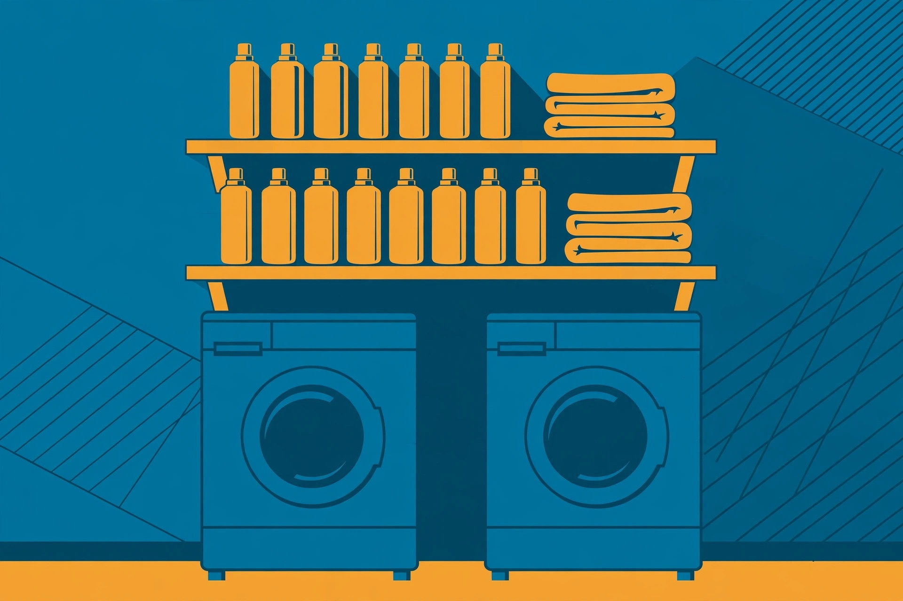

Laundry room shelving: depth, height, and load above the machines

Laundry shelving looks like the simplest shelving job in the house: one or two shelves on the wall above the washer and dryer. It goes wrong in predictable ways. The shelf sits where the top-load lid needs to swing. It is deep enough to hide small bottles behind big ones. It is rated for towels and loaded with a row of full detergent jugs. Or it puts bright detergent packets at exactly the height a small child can reach from the top of the washer.
Most idea pages answer with a single height and depth, and they do not agree with each other — recommendations in the top search results range across several inches for both. The fix is to stop copying a number and start from two things that can be verified: the dimensions of your machines, and the rated dimensions of the shelf you are actually buying. This guide works through both.
Start with the machines, not the shelf
Standard laundry machines are wider and deeper than the shelf above them should ever be. A current Whirlpool front-load dryer spec sheet gives product dimensions of 27 inches wide, 38-5/16 inches high, and 30-13/16 inches deep — and a depth of 54-3/8 inches with the door open 90 degrees. Two facts follow from numbers like these. First, a side-by-side pair claims roughly 54 inches of wall before any gap, so shelf length is set by the machines, not by the room. Second, the working space in front of and above the machines is busy: doors swing, lids lift, and baskets pass through it. Shelving has to fit the wall space that is left, above the swing and lift zone.
Stacked machines change the problem completely. A GE unitized laundry centre, for example, stands 75.5 inches tall assembled, at 27 inches wide and 31 inches deep. In a room with an eight-foot ceiling, that leaves about twenty inches of wall above the unit — enough for one shallow shelf used for light, infrequently needed items, and not enough for a shelving project at all if the ceiling is lower. Measure the wall you actually have before choosing a system.
How high: lid swing for top-load, reach for front-load
For a top-load washer, the shelf height is not a style choice; it is set by the lid. Open the lid fully, measure to its highest point, and place the underside of the lowest shelf above that point with room to spare for your hands and the lid's final travel. A shelf that clears a closed lid but blocks it at full open will be hit every laundry day, and anything stored at the front edge will eventually be knocked into the tub.
For front-load machines, nothing swings upward, so the limit is reach. The lowest shelf should sit high enough that loading the drum and reading the controls is unobstructed, and low enough that the person doing laundry can take down a full detergent bottle — the heaviest common item — without reaching up and pulling it toward their face. If the main user cannot reach the shelf comfortably standing on the floor, the shelf will either go unused or be used with a step stool in a wet room, which is the worse outcome. Put daily items on the lowest shelf within easy reach and reserve anything higher for light, occasional stock.
How deep and how much weight
Depth is where laundry shelves quietly fail. The machines below are around 31 inches deep; a shelf that deep would be a cupboard you cannot see into. The standard wire laundry shelf is 12 inches deep, and that shallowness is a feature: one row of bottles, everything visible, nothing lost at the back. Verified examples: ClosetMaid's 4-foot ventilated wire kit measures 48 × 12 inches, and its 3-foot kit measures 36 × 12 inches. Treat 12 inches as the default and go deeper only on a side wall where you can see along the shelf, not into it.
Weight is the other verified number to plan around. The same ClosetMaid kits are rated at 100 lb for the 4-foot kit and 60 lb for the 3-foot kit, evenly spread — check the rating on the kit you buy, because ratings vary by length and mounting. Detergent is dense: a shelf of full bottles, softener, and a jar of packets adds up faster than the same shelf of towels. Load the shelf the way the rating assumes — spread out, heaviest items near the supports — and keep the total honest. A wire shelf also earns its place in a humid room: the ventilated design lets air move around stored linens, and the vinyl-coated steel finish on these kits is specified to resist rusting and chipping, which matters where steam and splashes are routine.
Fixed wire, a second kit, or a board shelf: compared
| Option | Verified size and rating | Best for | Watch out for |
|---|---|---|---|
| Wire shelf kit, 4 ft | 48 × 12 in.; rated 100 lb; hardware included | A standard side-by-side pair; one long run of supplies | Rating assumes the kit's own mounting hardware, installed as directed |
| Wire shelf kit, 3 ft | 36 × 12 in.; rated 60 lb; listed at $49.99 USD (checked October 16, 2026) | A single machine, a laundry closet, or a shorter wall run | Lower rating — count detergent weight before loading it fully |
| Board shelf on brackets | No rating of its own; capacity depends on brackets, anchors, and span | Matching an existing room finish; very short runs | You are assembling the rating yourself — bracket spacing and stud fixing decide it |
The decision framework is short. If the wall run matches a kit length and the load is ordinary laundry supplies, a fixed wire kit is the simplest verified option. If the space is a closet or a single-machine nook, the shorter kit keeps the same depth discipline at a lower rating. Choose board shelving when appearance matters more than ventilation, and accept that its safe load is whatever your brackets and wall fixing genuinely support — the board itself is not the limit.
Measure and install: a numbered procedure
- Measure the machines: width of the pair, height to the top surface, and — for a top-loader — the highest point of the fully open lid. For a stacked unit, measure its full height and the wall remaining above it.
- Mark the lowest shelf line above the lid swing (top-load) or above the control and loading zone (front-load), then stand at the machines and test the reach to that line.
- Choose the kit length that fits the wall run and check its printed depth and weight rating against your bottles and your plan.
- Find the studs along the shelf line and plan the kit's clips and brackets to land on studs or the kit's specified wall anchors — never on unspecified plugs.
- Install the kit level, following its hardware sequence, then load it gradually: heaviest bottles first, spread along the shelf, nothing stacked two rows deep.
- Run one full laundry cycle with the shelf loaded and watch for vibration movement, then re-check the fixings after the first week.
What success looks like: the top-load lid opens fully without touching the shelf, every bottle on the shelf is visible in a single row and reachable from the floor, and the shelf does not flex or shift when a full detergent bottle is lifted off it during a spin cycle.
What belongs on laundry shelves — and what goes higher, closed
Open laundry shelves are for the items in weekly rotation: detergent, softener, stain treatment, dryer sheets, and a folded stack of cleaning cloths. They are a poor place for one thing in particular. University of Georgia Extension guidance is explicit that single-load liquid laundry packets are highly concentrated and should always be stored up, away, and out of the reach and sight of children and pets — and the exposure numbers behind that advice are not small: poison centres managed 1,423 packet exposures involving children five and younger in January and February 2024 alone. An open shelf above the washer fails that test if a child can climb onto the machine. Keep packets in a closed, high cabinet or a latched container, and treat bleach and other cleaning chemicals the same way. The open shelf keeps the routine supplies; the closed storage keeps the hazardous ones.
FAQ
How deep should a laundry shelf be? Twelve inches is the verified standard for wire laundry kits and the practical default: one visible row of bottles. Deeper shelves belong on side walls where you can see along them.
Can one shelf hold all my detergent? Check the kit's rating first — 100 lb for the 4-foot kit and 60 lb for the 3-foot kit cited here, evenly distributed — and spread the load instead of clustering full bottles in the middle of the span.
Is there room for shelves above a stacked washer-dryer? Often barely. A stacked centre can stand 75.5 inches tall, so measure the remaining wall; if it fits only one shallow shelf, reserve it for light, occasional items.
Where should laundry packets go? Up, away, and out of sight and reach of children — in closed storage, not on the open shelf above the machines.
The short version
Measure the machines first: lid swing or reach sets the height, a 12-inch depth keeps supplies visible, and the kit's printed rating — not optimism — sets the load. Wire kits publish all three numbers, which is why they are the easy recommendation here. Then split the storage honestly: routine supplies on the open shelf, detergent packets and chemicals up high and closed.